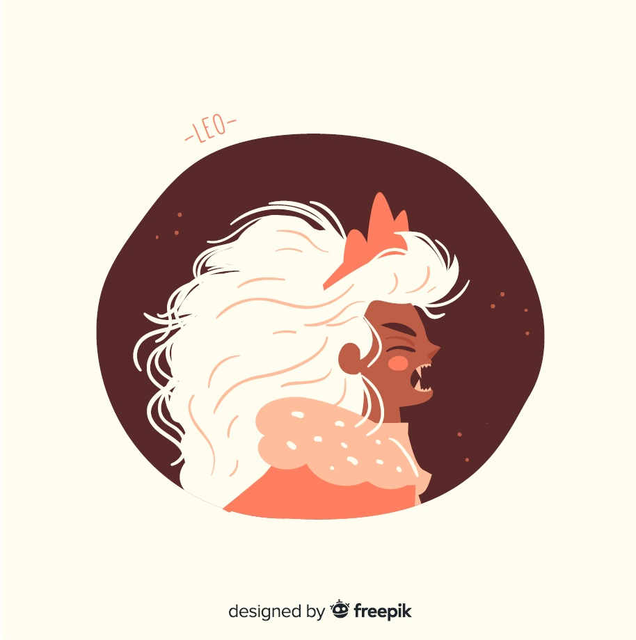

Lion
(23 juillet - 22 août)
Si vous êtes toujours célibataire, le beau Cupidon vous fera rencontrer quelqu’un de sérieux et qui possède une belle maturité d’esprit et c’est sans compter son look d’enfer. Main dans la main, vous cheminerez sur le chemin de l’amour. Vous ferez plusieurs planifications au bureau.